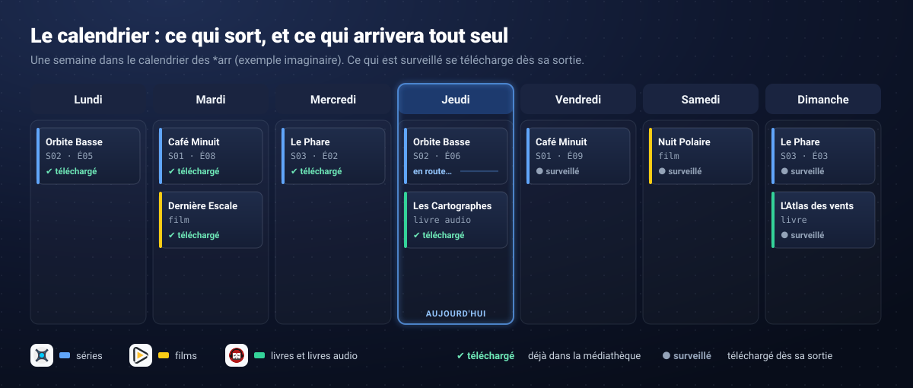
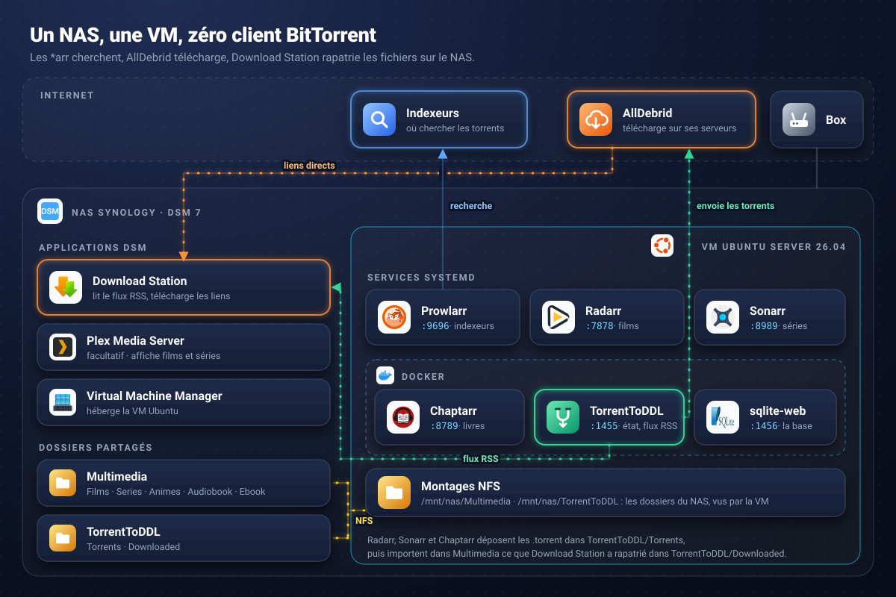
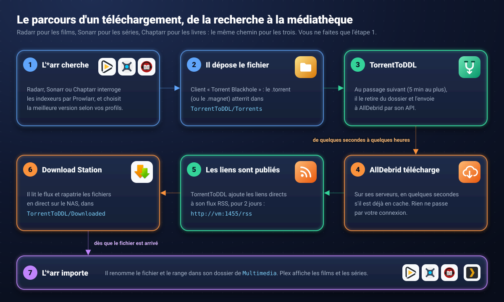
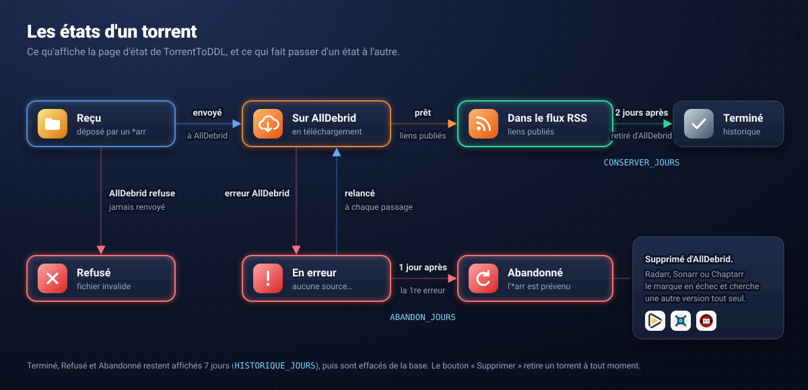
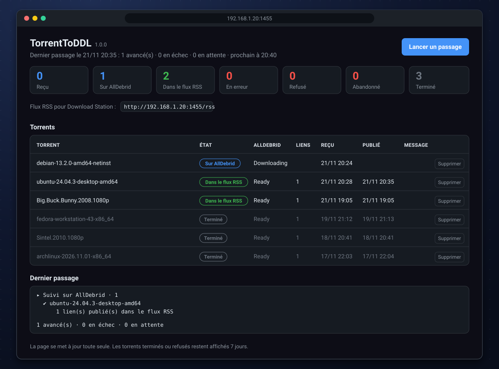

Tout est parti d'une envie très simple : allumer la télévision le soir, ouvrir Plex, et trouver déjà là les nouveaux épisodes de mes séries et les films que j'attendais, avec leur affiche et leur résumé, prêts à regarder. Sans avoir rien cherché, rien lancé, rien renommé : juste appuyer sur Lecture.

Radarr pour les films, Sonarr pour les séries, Chaptarr pour les livres audio et les ebooks : ces trois outils savent tout faire. Ils surveillent ce que vous voulez, cherchent la bonne version, renomment les fichiers et les rangent dans la médiathèque. Il leur manque une seule chose : quelqu'un pour télécharger.
D'habitude, c'est un client BitTorrent (qBittorrent, Transmission…) qui tourne en permanence à la maison, échange des morceaux de fichiers avec des inconnus et occupe la connexion. Je voulais aussi m'en passer. J'avais déjà deux outils sous la main :
- AllDebrid, un service de « débridage » : on lui confie un torrent, il le télécharge sur ses propres serveurs, souvent en quelques secondes, et le rend disponible en téléchargement direct ;
- Download Station, le gestionnaire de téléchargements de mon NAS Synology, qui sait lire un flux RSS et télécharger tous les liens qui y apparaissent.
Il manquait le chaînon entre les deux. Je l'ai écrit : TorrentToDDL (torrent to direct download link), un petit service qui récupère les torrents choisis par les *arr, les confie à AllDebrid et publie les liens directs dans un flux RSS pour Download Station.
Chez moi, tout tourne sur un NAS Synology : Download Station, Plex, et une machine virtuelle Ubuntu qui héberge les *arr et TorrentToDDL. Ce n'est pas une obligation. Les *arr et TorrentToDDL tournent sur n'importe quelle machine Linux de la maison (mini-PC, Raspberry Pi, autre NAS avec Docker). Seul Download Station demande un Synology, et la section Limites et alternatives dit quoi utiliser sans.
Cet article décrit toute l'installation, de la machine virtuelle vide au premier téléchargement importé dans la médiathèque, avec chaque commande, chaque réglage et ce qu'il doit afficher. Comptez une après-midi.
Avant de commencer. Cet outil sert à automatiser des téléchargements légaux. Lisez la section Et la légalité ? avant d'aller plus loin.
Sommaire
- Ce que vous obtenez
- Et la légalité ?
- La famille *arr en deux minutes
- Pourquoi passer par AllDebrid
- Comment ça marche
- Ce qu'il vous faut
- Préparer le NAS
- Créer la VM Ubuntu
- Monter les dossiers du NAS
- Installer Prowlarr, Radarr et Sonarr
- Installer Docker
- Installer Chaptarr
- Installer TorrentToDDL
- Configurer Prowlarr et les indexeurs
- Configurer Radarr, Sonarr et Chaptarr
- Brancher Download Station
- Le premier test, de bout en bout
- Au quotidien
- Dépannage
- Limites et alternatives
Ce que vous obtenez
À la fin de ce tutoriel, votre médiathèque vit toute seule :
- Une médiathèque qui se remplit sans vous. Vous ajoutez un film, une série ou un auteur dans l'*arr concerné ; il trouve une version, la fait télécharger, la renomme et la range. Quelques minutes plus tard, films et épisodes apparaissent dans Plex, avec leur affiche et leur résumé, sur la télévision, le téléphone ou l'ordinateur. Les livres arrivent de la même façon dans leur dossier.
- Ce qui n'est pas encore sorti arrive tout seul. Ajoutez dès aujourd'hui un film annoncé pour dans six mois, ou une série dont la saison suivante n'est pas commencée : l'*arr la surveille, et la télécharge dès qu'une version est disponible. Pour une série en cours de diffusion, chaque nouvel épisode arrive sans que vous y pensiez.
- Un suivi complet. Radarr, Sonarr et Chaptarr savent ce que vous avez, ce qui manque, et ce qui va sortir, avec un calendrier des prochaines sorties. Plex, de son côté, retient ce que vous avez vu : il marque les épisodes regardés, reprend un film là où vous l'avez arrêté, et propose l'épisode suivant.
- Tout depuis le téléphone. Avec l'application nzb360, vous ajoutez un film depuis le canapé, et il arrive dans Plex sans autre geste de votre part.
- De la qualité choisie une fois pour toutes. 1080p ou 4K, version française ou multilingue : vous réglez vos préférences une fois, et l'*arr remplace même un fichier par une meilleure version quand elle paraît.
- Rien à surveiller. Pas de client BitTorrent à garder allumé, pas de port ouvert sur la box : le NAS fait le travail, même quand votre ordinateur est éteint.

Et la légalité ?
Soyons clairs : ce montage ne doit pas servir au piratage.
Les technologies utilisées ici sont légales. BitTorrent est un simple protocole d'échange de fichiers, utilisé tous les jours pour distribuer des systèmes d'exploitation, des jeux ou des mises à jour. Le téléchargement direct est la façon la plus banale de récupérer un fichier sur Internet. AllDebrid est un service commercial légal, et les *arr sont des logiciels libres. Ce qui peut être illégal, c'est ce que vous téléchargez.
En France, comme dans la plupart des pays, télécharger une œuvre protégée (film, série, livre, musique) sans l'autorisation de ses ayants droit est de la contrefaçon, que ce soit par BitTorrent, par téléchargement direct ou par un service de débridage. Passer par AllDebrid change le chemin des fichiers, pas leur statut juridique : qu'une adresse IP n'apparaisse pas dans l'essaim ne rend pas légal un téléchargement qui ne l'est pas.
Ce que vous pouvez télécharger en toute légalité, par exemple :
- les distributions Linux et logiciels libres, souvent distribués par torrent : Ubuntu, Debian, Fedora…
- les films libres de droits : les films du Blender Institute (Big Buck Bunny, Sintel, Tears of Steel), les œuvres du domaine public diffusées par Internet Archive ;
- les livres audio du domaine public, comme ceux de LibriVox, et les ebooks du projet Gutenberg ;
- les œuvres sous licence Creative Commons, et les contenus dont vous détenez les droits.
Je ne suis pas juriste : en cas de doute sur une œuvre, renseignez-vous avant de la télécharger. Le choix de vos indexeurs, et de ce que vous en faites, relève de votre seule responsabilité.
La famille *arr en deux minutes
Les « *arr » sont une famille de logiciels libres qui automatisent une médiathèque. Ils partagent la même interface et la même logique : vous leur dites ce que vous voulez, ils s'occupent du reste.
| Outil | Rôle | Dans cet article |
|---|---|---|
| Prowlarr | gère les indexeurs, les sites où l'on cherche les torrents, à un seul endroit, et les transmet aux autres | oui |
| Radarr | les films : il surveille ceux que vous avez demandés, cherche et choisit une version, puis renomme et range le fichier | oui |
| Sonarr | les séries et les animés : pareil, épisode par épisode ou saison par saison, y compris les épisodes à venir | oui |
| Chaptarr | les livres audio et les ebooks, auteur par auteur. C'est la suite de Readarr, abandonné en 2025 | oui |
| Lidarr | la musique | non, mais il s'installe et se règle de la même façon |
| Bazarr | les sous-titres, en complément de Radarr et Sonarr | non |
| Overseerr, Jellyseerr | une jolie page pour demander des films ou des séries, à partager avec la famille | non |
Radarr, Sonarr et Chaptarr font exactement le même travail, chacun pour un type de média. Tout ce que cet article dit de l'un vaut pour les deux autres. Quand je parle de « l'*arr », c'est l'un des trois.
Ce que les *arr ne font pas, c'est télécharger. Pour ça, ils passent par un client de téléchargement. Ici, ce sera TorrentToDDL, avec AllDebrid et Download Station.
Pourquoi passer par AllDebrid
Avec un client BitTorrent classique, votre machine rejoint l'essaim : l'ensemble des ordinateurs qui possèdent des morceaux du fichier. Elle télécharge des morceaux chez les autres et, en échange, envoie ceux qu'elle a déjà. C'est le principe même de BitTorrent : chacun partage ce qu'il reçoit.
Avec TorrentToDDL, votre connexion ne rejoint jamais l'essaim. C'est AllDebrid qui joue le rôle de participant : ses serveurs échangent avec les autres pairs, assemblent le fichier, puis vous le servent comme un téléchargement ordinaire. Chez vous, il n'y a qu'un téléchargement direct en HTTPS, comme n'importe quel fichier sur un site web.
| Client BitTorrent à la maison | TorrentToDDL et AllDebrid | |
|---|---|---|
| Qui échange avec l'essaim | votre machine | les serveurs d'AllDebrid |
| Ce qui passe par votre connexion | des échanges BitTorrent, dans les deux sens | un téléchargement direct |
| Envoi depuis chez vous | oui, souvent autant que le téléchargement | non |
| Logiciel à faire tourner en permanence | le client BitTorrent | rien de plus que le NAS |
| Port à ouvrir sur la box | souvent, pour de bonnes performances | aucun |
| Vitesse | celle de l'essaim | souvent quasi immédiate : AllDebrid a déjà en cache la plupart des torrents connus |
La contrepartie : vous dépendez d'AllDebrid, un service payant, et vous ne rendez rien à l'essaim. Ceux qui tiennent à l'esprit du partage peuvent continuer à faire tourner un client BitTorrent à côté.
Comment ça marche
L'architecture

Tout tient dans un NAS Synology :
- Download Station et, si vous l'utilisez, Plex, tournent directement sur le NAS ;
- une VM Ubuntu, créée avec Virtual Machine Manager, fait tourner Prowlarr, Radarr et Sonarr, ainsi que Chaptarr et TorrentToDDL dans Docker ;
- les fichiers vivent dans deux dossiers partagés du NAS, que la VM monte en NFS :
Multimediapour la médiathèque,TorrentToDDLpour les échanges entre les *arr et Download Station.
La VM n'a pas besoin du NAS : n'importe quelle machine Linux de votre réseau fait l'affaire. En revanche, Download Station n'existe que sur Synology. Si vous n'en avez pas, voyez les alternatives.
Le parcours d'un téléchargement

Le point clé est l'étape 2 : l'*arr ne parle pas à TorrentToDDL. Il utilise un client de téléchargement prévu de longue date, Torrent Blackhole (« trou noir »), qui se contente de déposer le fichier .torrent dans un dossier, puis surveille un autre dossier où le résultat finira par arriver. TorrentToDDL fait tout le travail entre les deux. Radarr, Sonarr et Chaptarr ont chacun ce client, et on les règle tous les trois de la même façon.
Les états d'un torrent
Chaque torrent est suivi dans une petite base de données, et affiché sur une page d'état :

Deux règles méritent d'être retenues :
- les liens restent 2 jours dans le flux RSS, le temps que Download Station les télécharge. Ensuite, le torrent est supprimé d'AllDebrid ;
- un torrent qui reste en erreur plus d'un jour est abandonné, par exemple parce que plus personne ne le partage. TorrentToDDL prévient alors l'*arr qui l'avait demandé, qui le met sur liste noire et cherche une autre version tout seul.
Ce qu'il vous faut
Le matériel
- un NAS Synology sous DSM 7, compatible avec Virtual Machine Manager, avec au moins 4 Go de mémoire libres pour la VM ;
- ou, à défaut, n'importe quelle machine Linux (mini-PC, Raspberry Pi 4 ou 5…) en plus du NAS pour Download Station.
Les comptes
- un abonnement AllDebrid, et sa clé API (alldebrid.com > Mon compte > Clés API).
Les connaissances
- savoir ouvrir une session SSH (avec PuTTY, MobaXterm, ou le terminal de Windows) et copier-coller des commandes.
Les valeurs à adapter
Tout au long de l'article, j'utilise ces adresses d'exemple. Remplacez-les par les vôtres :
| Quoi | Exemple | Chez vous |
|---|---|---|
| Réseau local | 192.168.1.0/24 | souvent 192.168.0.0/24 ou 192.168.1.0/24 |
| NAS | 192.168.1.10 | l'adresse de votre NAS |
| VM | 192.168.1.20 | l'adresse que vous réserverez à la VM |
| Utilisateur de la VM | admin | celui que vous créerez à l'installation |
1. Préparer le NAS
1.1 Les dossiers partagés
Dans DSM : Panneau de configuration > Dossier partagé > Créer. Créez deux dossiers partagés :
| Dossier partagé | Sous-dossiers à créer (avec File Station) | Rôle |
|---|---|---|
Multimedia | Films, Series, Animes, Audiobook, Ebook | la médiathèque, rangée par les *arr |
TorrentToDDL | Torrents, Downloaded | les .torrent déposés par les *arr, et les fichiers rapatriés par Download Station |
Si vous avez déjà une médiathèque, gardez vos dossiers : il suffira d'adapter les chemins dans la suite.
1.2 Activer NFS
Panneau de configuration > Services de fichiers > NFS : cochez Activer le service NFS, puis Appliquer.
1.3 Autoriser la VM
Pour chacun des deux dossiers partagés : Panneau de configuration > Dossier partagé > sélectionnez le dossier > Modifier > Autorisations NFS > Créer :
| Réglage | Valeur |
|---|---|
| Nom d'hôte ou IP | 192.168.1.20 (l'adresse de la future VM) |
| Privilège | Lecture/Écriture |
| Squash | Mapper tous les utilisateurs sur admin |
| Sécurité | sys |
Pourquoi « Mapper tous les utilisateurs sur admin » ? Sur la VM, Radarr, Sonarr, Chaptarr et TorrentToDDL tournent chacun sous un utilisateur différent. Avec ce réglage, le NAS les traite tous comme un seul utilisateur : plus aucun problème de droits entre eux.
1.4 Installer Download Station
Centre de paquets > Download Station > Installer. On le branchera à l'étape 10.
2. Créer la VM Ubuntu
2.1 La machine virtuelle
- Téléchargez l'image d'Ubuntu Server 26.04 LTS sur ubuntu.com, et copiez-la sur le NAS.
- Virtual Machine Manager > Machine virtuelle > Créer > Linux :
- 2 processeurs, 4 Go de mémoire ;
- un disque de 32 Go ;
- le réseau par défaut (Default VM Network) ;
- l'image ISO d'Ubuntu au démarrage.
- Démarrez la VM et ouvrez sa console.
2.2 L'installation d'Ubuntu
Suivez l'installateur avec les choix par défaut, sauf :
- Profil : choisissez votre nom d'utilisateur (dans cet article,
admin) et un mot de passe solide ; - SSH : cochez Install OpenSSH server.
À la fin, redémarrez la VM et connectez-vous dans la console.
2.3 Une adresse fixe
Relevez l'adresse de la VM :
ip -br -4 addrRésultat attendu : une ligne comme enp3s0 UP 192.168.1.20/24.
Dans l'interface de votre box, section DHCP, réservez cette adresse pour la VM : elle la gardera après chaque redémarrage. Si cette adresse n'est pas 192.168.1.20, celle que vous avez autorisée à l'étape 1.3, retournez dans les autorisations NFS des deux dossiers partagés et remplacez-la. Sinon, le NAS refusera les montages de l'étape 3.
À partir d'ici, connectez-vous en SSH depuis votre PC : ssh admin@192.168.1.20.
2.4 Mises à jour et fuseau horaire
sudo apt update && sudo apt full-upgrade -y && sudo timedatectl set-timezone Europe/Paris2.5 Le pare-feu
On n'autorise que le réseau local, et on autorise SSH avant d'activer le pare-feu : sinon, la session en cours est coupée.
sudo ufw allow from 192.168.1.0/24 to any port 22 proto tcp && sudo ufw --force enable && sudo ufw statusRésultat attendu :
Status: active
To Action From
-- ------ ----
22/tcp ALLOW 192.168.1.0/243. Monter les dossiers du NAS
On monte chaque dossier partagé une seule fois, sous /mnt/nas :
sudo apt install -y nfs-common && sudo mkdir -p /mnt/nas/Multimedia /mnt/nas/TorrentToDDLOuvrez le fichier des montages :
sudo nano /etc/fstabAjoutez ces deux lignes à la fin, avec l'adresse de votre NAS :
192.168.1.10:/volume1/Multimedia /mnt/nas/Multimedia nfs rw,hard,nolock,_netdev,nofail 0 0
192.168.1.10:/volume1/TorrentToDDL /mnt/nas/TorrentToDDL nfs rw,hard,nolock,_netdev,nofail 0 0Enregistrez (Ctrl+O, Entrée) et quittez (Ctrl+X).
Ce que font les options de montage :
| Option | Ce qu'elle fait |
|---|---|
rw | lecture et écriture |
hard | si le partage ne répond plus un instant, la VM attend son retour au lieu de renvoyer une erreur |
nolock | pas de verrouillage des fichiers par le réseau, inutile ici |
_netdev | attendre que le réseau de la VM soit prêt avant de monter le dossier |
nofail | si le partage n'est pas encore disponible au démarrage de la VM (le NAS vient de redémarrer et son service NFS n'est pas prêt), la VM démarre quand même au lieu de rester bloquée. Il suffit ensuite de lancer sudo mount -a |
Montez-les et vérifiez :
sudo systemctl daemon-reload && sudo mount -a && ls /mnt/nas/Multimedia /mnt/nas/TorrentToDDLRésultat attendu :
/mnt/nas/Multimedia:
Animes Audiobook Ebook Films Series
/mnt/nas/TorrentToDDL:
Downloaded TorrentsVérifiez enfin que vous pouvez écrire dans le dossier des torrents :
touch /mnt/nas/TorrentToDDL/Torrents/test && rm /mnt/nas/TorrentToDDL/Torrents/test && echo "Écriture OK"Résultat attendu : Écriture OK. Si vous voyez Permission denied, c'est que le NAS refuse d'écrire pour la VM. Retournez dans les autorisations NFS des deux dossiers partagés (étape 1.3) et vérifiez que Squash vaut bien Mapper tous les utilisateurs sur admin.
Votre volume n'est pas forcément
volume1. Le chemin exact est indiqué dans Panneau de configuration > Dossier partagé > votre dossier > Modifier > Autorisations NFS, en bas de la fenêtre.
4. Installer Prowlarr, Radarr et Sonarr
Les trois s'installent de la même façon : on télécharge la version officielle, on crée un utilisateur dédié, et on déclare un service qui démarre avec la machine. La fonction suivante fait tout ; collez-la telle quelle dans le terminal, elle ne fait rien tant qu'on ne l'appelle pas.
installer_arr() {
local app="$1" App="$2" url="$3"
sudo groupadd -f media
sudo useradd --system --no-create-home --shell /usr/sbin/nologin --gid media "$app"
sudo mkdir -p "/var/lib/$app" && sudo chown "$app:media" "/var/lib/$app"
cd /tmp && wget -q --content-disposition "$url"
tar -xzf ${App}*.linux*.tar.gz && sudo mv "$App" /opt/ && rm ${App}*.linux*.tar.gz
sudo chown -R "$app:media" "/opt/$App"
sudo tee "/etc/systemd/system/$app.service" > /dev/null <<EOF
[Unit]
Description=$App
After=network-online.target remote-fs.target
[Service]
User=$app
Group=media
UMask=0002
ExecStart=/opt/$App/$App -nobrowser -data=/var/lib/$app/
Restart=on-failure
TimeoutStopSec=20
KillMode=process
[Install]
WantedBy=multi-user.target
EOF
sudo systemctl daemon-reload && sudo systemctl enable --now "$app"
cd ~
}Puis installez les trois :
sudo apt install -y curl wget sqlite3
installer_arr prowlarr Prowlarr 'https://prowlarr.servarr.com/v1/update/master/updatefile?os=linux&runtime=netcore&arch=x64'
installer_arr radarr Radarr 'https://radarr.servarr.com/v1/update/master/updatefile?os=linux&runtime=netcore&arch=x64'
installer_arr sonarr Sonarr 'https://services.sonarr.tv/v1/download/main/latest?version=4&os=linux&arch=x64'Sur un processeur ARM (Raspberry Pi), remplacez x64 par arm64 dans les trois adresses.
Vérifiez qu'ils tournent :
systemctl is-active prowlarr radarr sonarrRésultat attendu : trois lignes active.
Ouvrez leurs ports au réseau local :
sudo ufw allow from 192.168.1.0/24 to any port 9696,7878,8989 proto tcp| Application | Adresse |
|---|---|
| Prowlarr | http://192.168.1.20:9696 |
| Radarr | http://192.168.1.20:7878 |
| Sonarr | http://192.168.1.20:8989 |
À la première visite, Radarr, Sonarr et Prowlarr vous demandent de créer un identifiant : choisissez Forms (Login Page), un nom et un mot de passe. Si l'un d'eux ne le demande pas, faites-le dans Settings > General > Security > Authentication. On les configure aux étapes 8 et 9.
5. Installer Docker
Chaptarr et TorrentToDDL tournent dans Docker. On l'installe depuis le dépôt officiel :
sudo install -m 0755 -d /etc/apt/keyrings
sudo curl -fsSL https://download.docker.com/linux/ubuntu/gpg -o /etc/apt/keyrings/docker.asc
echo "deb [arch=$(dpkg --print-architecture) signed-by=/etc/apt/keyrings/docker.asc] https://download.docker.com/linux/ubuntu $(. /etc/os-release && echo "$VERSION_CODENAME") stable" | sudo tee /etc/apt/sources.list.d/docker.list > /dev/null
sudo apt update && sudo apt install -y docker-ce docker-ce-cli containerd.io docker-buildx-plugin docker-compose-pluginPour utiliser Docker sans sudo, ajoutez-vous au groupe docker, puis déconnectez-vous et reconnectez-vous :
sudo usermod -aG docker $USERAprès reconnexion, vérifiez :
docker run --rm hello-worldRésultat attendu : un message qui commence par Hello from Docker!.
Bon à savoir. Un port publié par Docker passe à côté du pare-feu : il est joignable depuis le réseau même sans règle
ufw. Ici, c'est sans conséquence, tout reste sur votre réseau local. Mais n'ouvrez jamais ces ports sur Internet depuis votre box.
Votre identifiant. Chaptarr et TorrentToDDL doivent créer leurs fichiers sous votre utilisateur, et non sous root. Relevez votre identifiant d'utilisateur et de groupe :
idRésultat attendu : une ligne comme uid=1000(admin) gid=1000(admin) …. Retenez les deux nombres : ils remplaceront 1000 dans les réglages PUID et PGID des deux étapes suivantes.
6. Installer Chaptarr
Chaptarr n'est distribué qu'en image Docker. Si vous ne gérez pas de livres, sautez cette étape et ignorez tout ce qui le concerne dans la suite.
sudo mkdir -p /opt/chaptarr/config && sudo chown -R $USER: /opt/chaptarr && nano /opt/chaptarr/docker-compose.ymlCollez :
services:
chaptarr:
image: chaptarr/chaptarr:latest
container_name: chaptarr
environment:
- PUID=1000
- PGID=1000
- UMASK=002
- TZ=Europe/Paris
volumes:
- /opt/chaptarr/config:/config
- /mnt/nas/Multimedia/Audiobook:/mnt/nas/Multimedia/Audiobook
- /mnt/nas/Multimedia/Ebook:/mnt/nas/Multimedia/Ebook
- /mnt/nas/TorrentToDDL:/mnt/nas/TorrentToDDL
ports:
- "8789:8789"
restart: unless-stoppedRemplacez 1000 dans PUID et PGID par les deux nombres donnés par id (étape 5).
Les dossiers ont le même chemin dans le conteneur que sur la VM. Chaptarr voit donc exactement les mêmes chemins que Radarr et Sonarr, et se règle exactement comme eux.
cd /opt/chaptarr && docker compose up -d && docker compose psRésultat attendu : une ligne chaptarr avec l'état Up. Chaptarr est sur http://192.168.1.20:8789 ; créez son identifiant comme pour les autres.
7. Installer TorrentToDDL
Le code de TorrentToDDL et son image Docker sont publiés sur GitHub : https://github.com/COMPTE_GITHUB/torrenttoddl. L'installation n'en récupère que deux fichiers : le docker-compose.yml et le modèle de réglages.
7.1 Récupérer les fichiers
sudo mkdir -p /opt/torrenttoddl && sudo chown $USER: /opt/torrenttoddl && cd /opt/torrenttoddl
curl -fsSLO https://raw.githubusercontent.com/COMPTE_GITHUB/torrenttoddl/main/docker-compose.yml
curl -fsSL https://raw.githubusercontent.com/COMPTE_GITHUB/torrenttoddl/main/.env.example -o .env
mkdir donneesdonnees contiendra la base de données. On le crée avant le premier démarrage pour qu'il vous appartienne : créé par Docker, il appartiendrait à root, et TorrentToDDL ne pourrait pas y écrire.
7.2 Les clés API des *arr
TorrentToDDL a besoin de la clé API de chaque *arr pour le prévenir quand il abandonne un torrent. Dans Radarr, Sonarr et Chaptarr : Settings > General > Security > API Key, copiez la clé.
7.3 Le fichier de réglages
nano /opt/torrenttoddl/.envRemplissez :
ALLDEBRID_API_KEY=votre_cle_alldebrid
DOSSIER_TORRENTS=/mnt/nas/TorrentToDDL/Torrents
PUID=1000
PGID=1000
PORT=1455
RADARR_URL=http://192.168.1.20:7878
RADARR_API_KEY=cle_de_radarr
SONARR_URL=http://192.168.1.20:8989
SONARR_API_KEY=cle_de_sonarr
CHAPTARR_URL=http://192.168.1.20:8789
CHAPTARR_API_KEY=cle_de_chaptarrRemplacez 1000 dans PUID et PGID par les deux nombres donnés par id (étape 5). Utilisez l'adresse de la VM, pas localhost : pour un conteneur, localhost désigne le conteneur lui-même. Sans Chaptarr, laissez ses deux lignes vides.
Les autres réglages ont des valeurs par défaut qui conviennent ; ils sont décrits dans le fichier et plus bas.
7.4 Laisser le conteneur joindre Radarr et Sonarr
Radarr et Sonarr tournent directement sur la VM, et le pare-feu n'accepte que le réseau local. Or un conteneur Docker arrive avec une adresse en 172.x. Il faut donc lui ouvrir leurs ports :
sudo ufw allow from 172.16.0.0/12 to any port 7878,8989 proto tcpChaptarr, lui, tourne dans Docker : pas de règle à ajouter.
7.5 Démarrer
cd /opt/torrenttoddl && docker compose up -d && docker compose logs torrenttoddlRésultat attendu :
torrenttoddl | 16/11/2026 21:04:12 INFO Radarr joint (version 6.3.0) : il sera prévenu des torrents abandonnés
torrenttoddl | 16/11/2026 21:04:12 INFO Sonarr joint (version 4.0.19) : il sera prévenu des torrents abandonnés
torrenttoddl | 16/11/2026 21:04:12 INFO Chaptarr joint (version 0.9.965.0) : il sera prévenu des torrents abandonnés
torrenttoddl | 16/11/2026 21:04:12 INFO TorrentToDDL 1.0.0 : surveille /torrents, un passage toutes les 5 min, page d'état sur le port 8080
torrenttoddl | 16/11/2026 21:04:13 INFO Passage terminé : 0 avancé(s) · 0 en échec · 0 en attenteLe port 8080 de la dernière ligne est celui du conteneur : depuis votre navigateur, la page est sur le port 1455.
Ouvrez http://192.168.1.20:1455 : la page d'état s'affiche, vide pour l'instant. Après quelques téléchargements, elle ressemble à ceci :

Le compose démarre aussi sqlite-web, sur http://192.168.1.20:1456 : la base de données dans le navigateur, à la manière de phpMyAdmin.
8. Configurer Prowlarr et les indexeurs
Prowlarr est le carnet d'adresses des trois autres. On y déclare les indexeurs une seule fois, et il les recopie dans Radarr, Sonarr et Chaptarr, avec les bonnes catégories pour chacun (films, séries, livres…).
8.1 Ajouter des indexeurs
Indexers > Add Indexer. Prowlarr en connaît plusieurs centaines. Utilisez les filtres en haut de la liste : Protocol sur torrent, Language pour trouver ceux de votre langue, Privacy pour distinguer :
| Type | Ce qu'il faut fournir | Remarque |
|---|---|---|
| Public | rien | accessible à tous, plus ou moins fourni |
| Semi-privé | un compte gratuit | identifiant et mot de passe, parfois un cookie de session |
| Privé | un compte sur invitation | le plus souvent une clé API ou une passkey, à copier depuis votre profil sur le site |
Pour chaque indexeur : remplissez les champs demandés, cliquez sur Test (coche verte attendue), puis Save.
Deux réglages utiles dans la fiche d'un indexeur :
- Priority : de 1 (le plus prioritaire) à 50. À qualité égale, l'*arr préfère l'indexeur le plus prioritaire ;
- Tags : pour réserver un indexeur à certaines applications, en mettant le même tag sur l'application (voir 8.3).
Certains sites sont protégés par Cloudflare et refusent les requêtes automatiques. Prowlarr le signale à l'ajout. Il faut alors un intermédiaire appelé FlareSolverr (Settings > Indexers > Indexer Proxies). Je ne le détaille pas ici : les indexeurs qui en ont besoin changent souvent.
8.2 Vérifier qu'un indexeur répond
Menu Search : tapez le nom d'une distribution Linux, par exemple debian, et lancez la recherche.
Résultat attendu : une liste de résultats, avec l'indexeur, la taille et le nombre de seeders de chacun.
8.3 Relier Prowlarr aux trois *arr
Settings > Apps > +, une fois pour chaque *arr, avec sa clé API (copiée à l'étape 7.2) :
| Application | Type à choisir | Prowlarr Server | Adresse de l'application |
|---|---|---|---|
| Radarr | Radarr | http://localhost:9696 | http://localhost:7878 |
| Sonarr | Sonarr | http://localhost:9696 | http://localhost:8989 |
| Chaptarr | Readarr | http://localhost:9696 | http://localhost:8789 |
Laissez Sync Level sur Full Sync : Prowlarr ajoute, modifie et retire lui-même les indexeurs dans chaque application. Cliquez sur Test, puis Save.
Résultat attendu : quelques secondes plus tard, vos indexeurs apparaissent dans Settings > Indexers de Radarr, de Sonarr et de Chaptarr, avec une mention (Prowlarr). Ne les modifiez pas là-bas : faites-le toujours dans Prowlarr.
8.4 Les profils de synchronisation
Settings > Apps > Sync Profiles règle ce que les *arr ont le droit de faire avec les indexeurs. Le profil Standard convient :
| Option | Rôle |
|---|---|
| Enable RSS | l'*arr surveille les nouveautés des indexeurs, toutes les 15 minutes environ, et prend tout seul ce que vous attendez |
| Enable Automatic Search | il cherche dès que vous ajoutez un film, une série ou un livre |
| Enable Interactive Search | vous pouvez chercher à la main et choisir une version |
| Minimum Seeders | en dessous, la release est ignorée. Mettez au moins 1 : un torrent sans source finit en erreur chez AllDebrid |
9. Configurer Radarr, Sonarr et Chaptarr
La configuration est rapide : une dizaine de minutes par *arr, et la plupart des réglages sont identiques. Seuls les profils de qualité, l'ajout d'un média et quelques options propres aux films et aux séries diffèrent. Je donne chaque réglage une seule fois, avec un tableau quand les valeurs diffèrent, et j'indique en tête de chaque partie quels *arr elle concerne.
Chaptarr : livres audio et ebooks. Chaptarr gère les deux formats dans la même application. Chacun a son dossier racine (
AudiobooketEbook, étape 9.1) et son profil tout prêt : Audiobook pour les livres audio (M4B, MP3, FLAC) et E-Book pour les ebooks (AZW3, EPUB, MOBI, PDF). À l'ajout d'un auteur, vous choisissez livre audio, ebook, ou les deux.
9.1 Les dossiers racine
Concerne : Radarr, Sonarr et Chaptarr.
C'est là que l'*arr range la médiathèque. Settings > Media Management > Root Folders > Add Root Folder :
| Application | Dossier(s) racine |
|---|---|
| Radarr | /mnt/nas/Multimedia/Films/ |
| Sonarr | /mnt/nas/Multimedia/Series/ et /mnt/nas/Multimedia/Animes/ |
| Chaptarr | /mnt/nas/Multimedia/Audiobook/ et /mnt/nas/Multimedia/Ebook/ |
9.2 Le renommage
Concerne : Radarr, Sonarr et Chaptarr.
Sur la même page, cochez Rename Movies (Radarr), Rename Episodes (Sonarr) ou Rename Books (Chaptarr). Les noms par défaut sont propres, et Plex reconnaît sans réglage ceux des films et des séries.
9.3 Le client de téléchargement : Torrent Blackhole
Concerne : Radarr, Sonarr et Chaptarr.
C'est le branchement sur TorrentToDDL. Settings > Download Clients > + > Torrent Blackhole, avec les mêmes valeurs dans les trois *arr :
| Champ | Valeur |
|---|---|
| Name | TorrentToDDL |
| Torrent Folder | /mnt/nas/TorrentToDDL/Torrents/ |
| Watch Folder | /mnt/nas/TorrentToDDL/Downloaded/ |
| Save Magnet Files | coché |
| Save Magnet Files Extension | .magnet |
Cliquez sur Test (coche verte attendue), puis Save.
- Torrent Folder : là où l'*arr dépose le
.torrentqu'il a choisi, et où TorrentToDDL va le chercher. - Watch Folder : là où Download Station dépose les fichiers, et où l'*arr les attend pour les importer.
- Save Magnet Files : certains indexeurs ne fournissent qu'un lien magnet, sans fichier
.torrent. L'*arr l'écrit alors dans un petit fichier.magnet, que TorrentToDDL sait aussi envoyer à AllDebrid.
9.4 La gestion des échecs
Concerne : Radarr, Sonarr et Chaptarr.
Sur la même page, section Failed Download Handling : vérifiez que Redownload est coché (c'est le réglage par défaut). C'est ce qui permet à l'*arr de chercher une autre version quand TorrentToDDL abandonne un torrent.
9.5 Les profils de qualité
Concerne : Radarr, Sonarr et Chaptarr.
Settings > Profiles : chaque *arr a des profils tout prêts. Un profil dit quelles qualités l'*arr accepte, laquelle il préfère, et à partir de laquelle il arrête de chercher mieux (Upgrade Until).
| Application | Profils tout prêts |
|---|---|
| Radarr, Sonarr | HD-1080p, Ultra-HD… |
| Chaptarr | Audiobook (M4B, MP3, FLAC) et E-Book (AZW3, EPUB, MOBI, PDF) |
Rien à créer ici : vous choisirez un profil à chaque ajout d'un média (étape 9.8). Le seul changement à faire dans un profil est la préférence pour le français, juste après.
9.6 Préférer les versions françaises
Concerne : Radarr et Sonarr seulement.
Par défaut, les *arr ne regardent pas la langue. Pour qu'ils préfèrent les versions françaises ou multilingues, on crée un format personnalisé, dans Radarr puis dans Sonarr.
Settings > Custom Formats > + :
- Name :
Français - Conditions > + > Release Title :
- Name :
VF ou MULTi - Regular Expression :
\b(MULTI|VFF|VFQ|VFI|VF2|TRUEFRENCH|FRENCH)\b
- Name :
Save, puis dans Settings > Profiles, ouvrez le profil que vous utiliserez, par exemple HD-1080p :
- Custom Formats : donnez le score 100 à
Français; - Language (Radarr seulement) : Any, le format personnalisé s'en charge ;
- Minimum Custom Format Score : 0 pour simplement préférer le français, 1 pour n'accepter que des versions françaises.
Résultat attendu : dans une recherche manuelle, les releases françaises affichent Français dans la colonne des formats, et un score de 100.
9.7 Écarter les releases inutilisables
Concerne : Radarr et Sonarr seulement.
Settings > Profiles > Release Profiles > +, Must Not Contain : BDMV. Ces disques Blu-ray complets contiennent des centaines de fichiers que l'*arr ne sait pas importer.
9.8 Ajouter un premier film, une série, un livre
Concerne : Radarr, Sonarr et Chaptarr.
| Radarr | Sonarr | Chaptarr | |
|---|---|---|---|
| Où | Movies > Add New | Series > Add New | Authors > Add New |
| Root Folder | Films | Series, ou Animes pour un animé | Audiobook pour les livres audio, Ebook pour les ebooks |
| Quality Profile | HD-1080p, par exemple | HD-1080p, par exemple | Audiobook et/ou E-Book |
| Réglage propre | Minimum Availability : Released (attend la sortie numérique) | Series Type : Anime pour un animé (numérotation absolue des épisodes) | livre audio, ebook, ou les deux ; Monitor : les livres de l'auteur à surveiller |
Cochez Start search for missing… avant de valider : l'*arr cherche aussitôt.
Pas encore sorti ? Ajoutez-le quand même. Il apparaît comme manquant et dans le Calendar de l'*arr ; dès qu'une version correspondant à votre profil paraît sur un indexeur, il la prend tout seul (c'est l'option Enable RSS des profils de synchronisation, étape 8.4). Pour une série, choisissez Monitor : Future Episodes si vous ne voulez que les prochains épisodes, ou All Episodes pour tout récupérer.
9.9 Prévenir Plex
Concerne : Radarr et Sonarr seulement.
Plex tourne sur le NAS, là où arrivent les fichiers : il peut s'en apercevoir tout seul.
- Dans Plex, créez une bibliothèque par type de média, chacune sur son dossier du NAS : Films sur
Multimedia/Films, Séries surMultimedia/SeriesetMultimedia/Animes. - Paramètres > Bibliothèque : cochez Analyser ma bibliothèque automatiquement (et Lancer une analyse partielle quand des changements sont détectés).
Résultat attendu : quelques instants après chaque import par Radarr ou Sonarr, le nouveau film ou épisode apparaît dans Plex.
Pour les retardataires, Radarr et Sonarr peuvent aussi prévenir Plex directement : Settings > Connect > + > Plex Media Server, adresse du NAS, port 32400, puis Authenticate with Plex.tv et Update Library coché.
10. Brancher Download Station
Dans Download Station :
- Paramètres > Emplacement : choisissez
TorrentToDDL/Downloadedcomme destination par défaut. - RSS (icône de flux dans la colonne de gauche) > Ajouter :
- URL :
http://192.168.1.20:1455/rss; - cochez le téléchargement automatique des nouveaux éléments.
- URL :
- Paramètres > RSS : réglez l'intervalle de mise à jour du flux, par exemple toutes les 15 minutes.
Le flux contient toujours un élément « Initialisation RSS », sans lien : il permet à Download Station d'accepter le flux même quand il est vide. Ignorez-le.
11. Le premier test, de bout en bout
Dans Radarr, Sonarr ou Chaptarr, ajoutez quelque chose que vous avez le droit de télécharger, puis lancez une recherche manuelle (icône de personne) et choisissez une release. Voici ce qui doit se passer :
| Quand | Où regarder | Ce que vous devez voir |
|---|---|---|
| tout de suite | l'*arr > Activity > History | une ligne Grabbed |
| au passage suivant (5 min au plus) | page d'état | le torrent Sur AllDebrid |
| de quelques secondes à quelques heures | page d'état | le torrent Dans le flux RSS, avec ses liens |
| à la prochaine lecture du flux | Download Station | le téléchargement démarre dans Downloaded |
| une fois le fichier arrivé | l'*arr > Activity > History | une ligne Imported : le fichier est rangé dans la médiathèque |
| 2 jours plus tard | page d'état | le torrent passe en Terminé |
Pour ne pas attendre les 5 minutes, cliquez sur Lancer un passage sur la page d'état.
Le détail de chaque passage s'affiche en bas de la page. Pour un premier téléchargement, quelque chose comme :
▸ Réception · 1
✔ Ma.Release.1080p.WEB
reçu
▸ Envoi sur AllDebrid · 1
✔ Ma.Release.1080p.WEB
envoyé sur AllDebrid (id 851885288)
▸ Suivi sur AllDebrid · 1
✔ Ma.Release.1080p.WEB
1 lien(s) publié(s) dans le flux RSS
Rien à traiter : Relance des erreurs, Historisation
3 avancé(s) · 0 en échec · 0 en attenteFaites ce test une fois avec chacun des trois *arr. Leurs réglages sont identiques, mais vous les avez saisis trois fois : une erreur dans l'un d'eux, un chemin mal tapé dans Torrent Blackhole par exemple, ne se verrait sinon qu'au premier vrai téléchargement.
Au quotidien
La page d'état
| Élément | Rôle |
|---|---|
| Compteurs | le nombre de torrents dans chaque état |
| Tableau | chaque torrent, son état, ce qu'en dit AllDebrid, le nombre de liens, les dates, et un message en cas de problème |
| Lancer un passage | ne pas attendre les 5 minutes |
| Supprimer | retire un torrent d'AllDebrid, de la base et du flux RSS, après confirmation |
| Dernier passage | le détail de ce qui vient de se passer |
Supprimer ne prévient pas l'*arr. Pour remplacer une release, supprimez-la aussi de sa file d'attente (Activity > Queue, en cochant Blocklist), puis relancez une recherche.
Piloter depuis le téléphone avec nzb360
Une fois la chaîne en place, on n'ouvre presque plus les interfaces web. Sur Android, nzb360 réunit Radarr, Sonarr, Chaptarr et Prowlarr dans une seule application, et c'est celle que j'utilise au quotidien. On y fait, du bout du doigt :
- ajouter un film, une série ou un auteur : une recherche, un profil de qualité, et l'*arr s'occupe du reste ;
- consulter le calendrier des prochaines sorties de tous les *arr à la fois ;
- suivre la file d'attente et l'historique de chacun, pour voir où en est un téléchargement ;
- lancer une recherche manuelle et choisir soi-même une release, quand la version choisie d'office ne convient pas ;
- interroger tous les indexeurs d'un coup, par Prowlarr.
Configuration : dans nzb360, ajoutez chaque service avec son adresse et sa clé API, les mêmes qu'à l'étape 7.2 (Settings > General > Security > API Key dans chaque *arr).
| Service | Type dans nzb360 | Adresse |
|---|---|---|
| Radarr | Radarr | http://192.168.1.20:7878 |
| Sonarr | Sonarr | http://192.168.1.20:8989 |
| Chaptarr | Chaptarr | http://192.168.1.20:8789 |
| Prowlarr | Prowlarr | http://192.168.1.20:9696 |
nzb360 connaît Chaptarr en tant que tel : ses livres et livres audio s'affichent comme les films et les séries.
Résultat attendu : chaque service affiche sa bibliothèque, et le calendrier se remplit des prochaines sorties.
nzb360 n'existe que sur Android. L'application est gratuite à installer, mais limitée tant qu'on ne paie pas : on débloque à vie les services dont on se sert (Lifetime Unlocks), ou on prend l'abonnement All Access, qui ouvre tout et donne accès aux versions de test. Les prix sont affichés dans l'application. Les anciens acheteurs de la version Pro, l'ancien modèle à achat unique, ont gardé leurs fonctions.
Hors de chez vous : ces adresses ne répondent que sur votre réseau local, et c'est très bien ainsi. N'ouvrez pas les ports des *arr sur votre box : leurs interfaces ne sont pas faites pour être exposées sur Internet. Pour les piloter de l'extérieur, passez par un VPN (celui de votre box, WireGuard ou Tailscale) : une fois connecté, nzb360 fonctionne comme à la maison.
Déposer un torrent à la main
Déposez le .torrent dans le dossier partagé TorrentToDDL/Torrents du NAS, depuis File Station ou le partage réseau de votre PC. Il part au passage suivant. Un fichier n'est pris que 10 secondes après sa dernière modification : une copie lente ne pose pas de problème. Aucun *arr ne l'ayant demandé, c'est à vous de ranger le fichier une fois arrivé dans Downloaded.
La base de données
Un seul fichier : /opt/torrenttoddl/donnees/torrenttoddl.db.
- Dans le navigateur :
http://192.168.1.20:1456(sqlite-web). - En ligne de commande :
sqlite3 -box /opt/torrenttoddl/donnees/torrenttoddl.db "SELECT id, etat, statut_alldebrid, nom FROM torrents;"- Repartir de zéro :
cd /opt/torrenttoddl && docker compose down && rm -rf donnees/* && docker compose up -dLes journaux
cd /opt/torrenttoddl && docker compose logs -f torrenttoddlCtrl+C pour quitter. Un passage sans événement tient sur une ligne ; un passage où quelque chose bouge affiche son détail.
Mettre à jour
cd /opt/torrenttoddl && docker compose pull && docker compose up -dMême commande pour Chaptarr, dans /opt/chaptarr. Radarr, Sonarr et Prowlarr se mettent à jour depuis leur propre interface (System > Updates).
Les réglages
Dans /opt/torrenttoddl/.env, puis docker compose up -d pour les appliquer :
| Variable | Par défaut | Rôle |
|---|---|---|
INTERVALLE_MINUTES | 5 | temps entre deux passages |
CONSERVER_JOURS | 2 | durée des liens dans le flux RSS, avant suppression d'AllDebrid |
ABANDON_JOURS | 1 | durée en erreur avant d'abandonner un torrent, comptée depuis la première erreur |
HISTORIQUE_JOURS | 7 | durée d'affichage d'un torrent terminé, refusé ou abandonné |
TZ | Europe/Paris | fuseau des heures affichées |
Si votre NAS est éteint la nuit, augmentez CONSERVER_JOURS : Download Station doit avoir le temps de télécharger.
Sauvegarder
Ce qui ne se reconstruit pas :
| Chemin | Contenu |
|---|---|
/var/lib/prowlarr, /var/lib/radarr, /var/lib/sonarr | réglages et bibliothèques de Prowlarr, Radarr et Sonarr |
/opt/chaptarr/config | réglages et bibliothèque de Chaptarr |
/opt/torrenttoddl/.env et donnees/ | réglages et base de TorrentToDDL |
Le plus simple : sauvegarder toute la VM avec la fonction de sauvegarde de Virtual Machine Manager, ou Hyper Backup, vers un disque externe. Chaque *arr fait aussi ses propres sauvegardes, dans System > Backup.
Dépannage
| Symptôme | Cause probable | Solution |
|---|---|---|
| Un torrent déposé ne bouge pas, les passages disent « 0 en attente » | TorrentToDDL surveille un autre dossier | grep DOSSIER_TORRENTS /opt/torrenttoddl/.env, corriger, puis docker compose up -d (un simple redémarrage ne suffit pas) |
droits insuffisants sur le dossier surveillé | TorrentToDDL ne peut pas retirer les fichiers du dossier : le NAS refuse d'écrire pour la VM | dans les autorisations NFS des deux dossiers partagés (étape 1.3), vérifier que Squash vaut bien Mapper tous les utilisateurs sur admin |
unable to open database file au démarrage | donnees/ appartient à root | sudo chown -R $USER: /opt/torrenttoddl/donnees, puis docker compose restart |
| Après un redémarrage, plus rien n'arrive | le partage NFS n'était pas encore prêt quand la VM a démarré : les conteneurs voient des dossiers vides | sudo mount -a, puis docker compose restart dans /opt/torrenttoddl et /opt/chaptarr |
| Le test du client Torrent Blackhole échoue dans un *arr | le dossier n'existe pas ou n'est pas accessible | vérifier les montages (étape 3) ; pour Chaptarr, les volumes de son docker-compose.yml |
| Aucun indexeur dans un *arr | l'application n'est pas reliée dans Prowlarr | Settings > Apps de Prowlarr : Test, puis Sync App Indexers |
Radarr injoignable dans le journal | la règle du pare-feu de l'étape 7.4 manque, ou l'adresse est fausse | sudo ufw status, vérifier RADARR_URL (idem pour Sonarr) |
Sonarr refuse la clé API | clé mal copiée, ou régénérée depuis | la recopier dans .env, puis docker compose up -d |
Chaptarr a répondu HTTP 404 | une autre version d'API | ajouter CHAPTARR_API=v1 (ou la version indiquée par Chaptarr) dans .env |
Erreur AllDebrid : AUTH_BAD_APIKEY | clé AllDebrid invalide | la recopier depuis alldebrid.com |
| « limite de torrents actifs atteinte » | AllDebrid accepte 30 torrents actifs au plus | rien à faire : les suivants partent dès qu'une place se libère |
| Un torrent reste « En erreur » | aucune source ne le partage | rien à faire : il est abandonné au bout d'un jour, et l'*arr cherche une autre version |
| Download Station ne télécharge rien | flux mal saisi, ou téléchargement automatique décoché | ouvrir http://192.168.1.20:1455/rss dans un navigateur : les liens doivent y figurer |
| Le fichier est téléchargé mais jamais importé | Watch Folder différent de la destination de Download Station, ou release BDMV | vérifier les deux chemins ; écarter BDMV (étape 9.7) |
Limites et alternatives
TorrentToDDL est volontairement simple. Ses limites :
- Les *arr ne voient pas la progression. Avec Torrent Blackhole, ils voient seulement le fichier arriver, ou l'échec quand TorrentToDDL abandonne un torrent. Pas de barre de progression dans leur file d'attente.
- Le délai dépend de Download Station, qui ne relit le flux qu'à intervalle régulier.
- Un seul service de débridage : AllDebrid.
- Pas de mot de passe sur la page d'état ni sur sqlite-web : ils sont faits pour un réseau local. Ne les publiez jamais sur Internet, ni par une redirection de port, ni par un reverse proxy.
- Tous les fichiers du torrent sont téléchargés, y compris les
.nfoet les extraits. Les *arr les ignorent à l'import, mais ils restent dansDownloaded: un nettoyage régulier de ce dossier est utile.
Et sans Synology ?
L'alternative la plus connue s'appelle RDT-Client. Il fait le même pont entre les *arr et un service de débridage, mais autrement :
| TorrentToDDL | RDT-Client | |
|---|---|---|
| Comment les *arr lui parlent | client Torrent Blackhole : un dossier | il se fait passer pour qBittorrent : les *arr le pilotent comme un vrai client BitTorrent |
| Qui télécharge les fichiers chez vous | Download Station, sur le NAS | RDT-Client lui-même, sur la machine où il tourne |
| Progression visible dans les *arr | non | oui |
| Services de débridage | AllDebrid | AllDebrid, Real-Debrid, Premiumize, TorBox… |
| Pour qui | ceux qui ont un Synology et veulent que le NAS fasse le travail | tout le monde, NAS ou pas |
Si vous n'avez pas de Synology, ou si la progression dans les *arr compte pour vous, RDT-Client est le bon choix. TorrentToDDL, lui, mise sur la simplicité et sur un outil que beaucoup ont déjà : Download Station.
Sous le capot
Pour les curieux, TorrentToDDL tient en quelques centaines de lignes de Python :
| Fichier | Rôle |
|---|---|
alldebrid.py | le client de l'API AllDebrid |
arr.py | prévenir Radarr, Sonarr ou Chaptarr d'un échec |
base.py | la base SQLite : un torrent par ligne |
passage.py | les étapes d'un passage, et le moteur qui les lance toutes les 5 minutes |
web.py | la page d'état et le flux RSS |
Une cinquantaine de tests automatiques simulent AllDebrid et les *arr. Ils tournent à chaque nouvelle version, avant la publication de l'image Docker.
Les remarques et les améliorations sont les bienvenues sur GitHub.
Les logos des schémas viennent de la collection dashboard-icons et restent la propriété de leurs détenteurs respectifs : Synology, Plex, Canonical, Docker, et les projets Prowlarr, Radarr, Sonarr, Chaptarr et SQLite. AllDebrid et TorrentToDDL sont représentés par des pictogrammes dessinés pour l'article. Les écrans de Plex, du téléphone, du calendrier et de la page d'état sont des illustrations, pas des captures : les films sont ceux, libres, du Blender Institute, les autres torrents sont des distributions Linux, et les séries et les livres sont imaginaires.